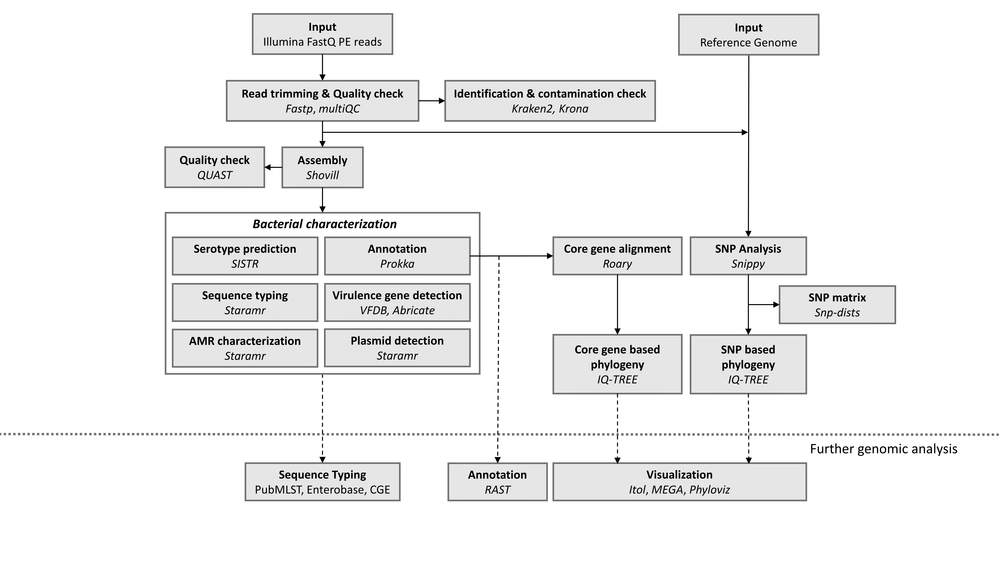
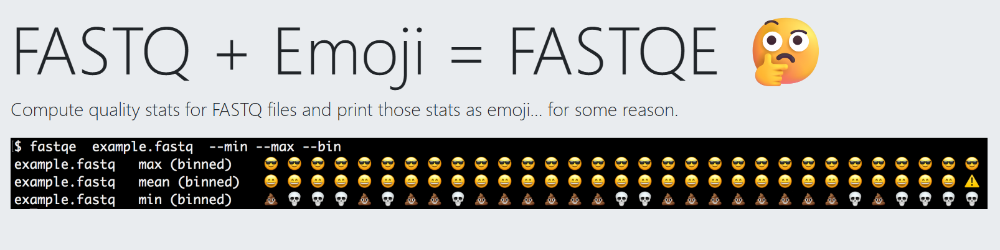

What is a fastq file ?
Lesson overview
Questions - What is the output of Next Generation Sequencing ?
Objectives - Explain how a FASTQ file encodes per-base quality scores.
What is the output of Next Generation Sequencing ?#
The primary output of Next Generation Sequencing is a FASTQ file, which contains both the DNA sequences (reads) and their associated quality scores. This format is the universal standard for storing raw sequencing data across all NGS platforms.
WARNING: even if it's the same format doesn't mean that the downstream analyses will be the same. Long read and Short reads have specific bioinformatic tools due to their specificity (short vs long reads, paired vs single reads)
Key characteristics of NGS output:#
- Millions of reads: A single sequencing run generates millions to billions of short DNA sequences
- Paired-end files: For paired-end sequencing, data comes in two files (R1/R2 or _1/_2), representing forward and reverse reads from the same DNA fragment
- Large file sizes: FASTQ files are typically compressed (.gz, .bz2) due to their size
- Quality information: Each base includes a confidence score
Details on the FASTQ format#
Although it looks complicated (and it is), we can understand the FASTQ format with a little decoding. Some rules about the format include the following:
| Line | Description |
|---|---|
| 1 | Always begins with '@' followed by the information about the read |
| 2 | The actual DNA sequence |
| 3 | Always begins with a '+' and sometimes contains the same info as in line 1 |
| 4 | Has a string of characters which represent the quality scores; must have same number of characters as line 2 |
We can view the first complete read in one of the files from our dataset using head to look at
the first four lines. But we have to decompress one of the files first.
@MISEQ-LAB244-W7:156:000000000-A80CV:1:1101:12622:2006 1:N:0:CTCAGA
CCCGTTCCTCGGGCGTGCAGTCGGGCTTGCGGTCTGCCATGTCGTGTTCGGCGTCGGTGGTGCCGATCAGGGTGAAATCCGTCTCGTAGGGGATCGCGAAGATGATCCGCCCGTCCGTGCCCTGAAAGAAATAGCACTTGTCAGATCGGAAGAGCACACGTCTGAACTCCAGTCACCTCAGAATCTCGTATGCCGTCTTCTGCTTGAAAAAAAAAAAAGCAAACCTCTCACTCCCTCTACTCTACTCCCTT
+
A>>1AFC>DD111A0E0001BGEC0AEGCCGEGGFHGHHGHGHHGGHHHGGGGGGGGGGGGGHHGEGGGHHHHGHHGHHHGGHHHHGGGGGGGGGGGGGGGGHHHHHHHGGGGGGGGHGGHHHHHHHHGFHHFFGHHHHHGGGGGGGGGGGGGGGGGGGGGGGGGGGGFFFFFFFFFFFFFFFFFFFFFBFFFF@F@FFFFFFFFFFBBFF?@;@####################################
Line 1: @ header:#
The first line contains important metadata. Depending on the sequencing technology - Instrument name (MISEQ) - Run ID 5LAB244 - Flowcell coordinates - Read number (1 or 2 for paired-end) - Filter flag (Y/N) - Index/barcode sequence
Understanding Quality Scores (Phred scores):#
Line 4 shows the quality of each nucleotide in the read. Quality is interpreted as the probability of an incorrect base call (e.g., 1 in 10) or, equivalently, the base call accuracy (e.g., 90%). Each nucleotide's numerical score's value is converted into a character code where every single character represents a quality score for an individual nucleotide. This conversion allows the alignment of each individual nucleotide with its quality score. For example, in the line above, the quality score line is:
A>>1AFC>DD111A0E0001BGEC0AEGCCGEGGFHGHHGHGHHGGHHHGGGGGGGGGGGGGHHGEGGGHHHHGHHGHHHGGHHHHGGGGGGGGGGGGGGGGHHHHHHHGGGGGGGGHGGHHHHHHHHGFHHFFGHHHHHGGGGGGGGGGGGGGGGGGGGGGGGGGGGFFFFFFFFFFFFFFFFFFFFFBFFFF@F@FFFFFFFFFFBBFF?@;@####################################
The numerical value assigned to each character depends on the sequencing platform that generated the reads. The sequencing machine used to generate our data uses the standard Sanger quality PHRED score encoding, using Illumina version 1.8 onwards. Each character is assigned a quality score between 0 and 41, as shown in the chart below.
Quality encoding: !"#$%&'()*+,-./0123456789:;<=>?@ABCDEFGHIJ
| | | | |
Quality score: 01........11........21........31........41
Quality scores represent the probability that a base call is incorrect:
- Q10: 90% accuracy (1 in 10 chance of error)
- Q20: 99% accuracy (1 in 100 chance of error)
- Q30: 99.9% accuracy (1 in 1,000 chance of error)
- Q40: 99.99% accuracy (1 in 10,000 chance of error)
The quality score Q relates to error probability P by: Q = -10 × log₁₀(P)
Most analyses require Q20 or Q30 minimum quality.
In this link, you can find more information about quality scores.
Looking back at the read:
@MISEQ-LAB244-W7:156:000000000-A80CV:1:1101:12622:2006 1:N:0:CTCAGA
CCCGTTCCTCGGGCGTGCAGTCGGGCTTGCGGTCTGCCATGTCGTGTTCGGCGTCGGTGGTGCCGATCAGGGTGAAATCCGTCTCGTAGGGGATCGCGAAGATGATCCGCCCGTCCGTGCCCTGAAAGAAATAGCACTTGTCAGATCGGAAGAGCACACGTCTGAACTCCAGTCACCTCAGAATCTCGTATGCCGTCTTCTGCTTGAAAAAAAAAAAAGCAAACCTCTCACTCCCTCTACTCTACTCCCTT
+
A>>1AFC>DD111A0E0001BGEC0AEGCCGEGGFHGHHGHGHHGGHHHGGGGGGGGGGGGGHHGEGGGHHHHGHHGHHHGGHHHHGGGGGGGGGGGGGGGGHHHHHHHGGGGGGGGHGGHHHHHHHHGFHHFFGHHHHHGGGGGGGGGGGGGGGGGGGGGGGGGGGGFFFFFFFFFFFFFFFFFFFFFBFFFF@F@FFFFFFFFFFBBFF?@;@####################################
We can now see that there is a range of quality scores but that the end of the sequence is
very poor (# = a quality score of 2).
Bioinformatic workflows#
When working with high-throughput sequencing data, the fastq reads you get off the sequencer must pass through several different tools to generate your final desired output. The execution of this set of tools in a specified order is commonly referred to as a workflow or a pipeline.
An example of a ILLUMINA bacterial genome analysis workflow is provided below:

For this workshop, we will only do a subset of this workflow :
- Quality control - Assessing quality using FastQC and Trimming and/or filtering reads.
- Assembly of bacterial genome and Quality Checking of the Assembly
- Bacterial Characterization: Multi Locus Sequence Typing (MLST), Anti-Microbial Resistance (AMR) and Genome Annotation
These workflows in bioinformatics adopt a plug-and-play approach in that the output of one tool can be easily used as input to another tool without any extensive configuration. Having standards for data formats is what makes this feasible. Standards ensure that data is stored in a way that is generally accepted and agreed upon within the community. Therefore, the tools used to analyze data at different workflow stages are built, assuming that the data will be provided in a specific format. You just discovered the FASTQ Format ! Throughout the workshop we will encounter many other data file formats.
Assessing read quality using FASTqe#
The quality symbol in FASTQ Format can be hard to interpret, that's why we are going to use our first tool to have a better understanding of the data: FastQE. FastQE turns ASCII characters into emojis that are easy to interpret.

We are going to use a Bioinformatic tool named Galaxy.s